Contents
1. The blind A/B: method, result, conclusions — which of the three
geometry switches is right
2. What the mirror result does and does not settle — incl. the
wedge-phase test that decided it
3. The FST strip mapping, checked on hits — outer sensors,
inner↔outer, and the 1° gap
4. A real FST-to-sTGC misalignment — the ~1 cm, and why the dx
peak is double
5. kUseSpacePoints true vs false — what each path uses,
the five defects fixed in the planar path, and Flemming's new geometry running end to end
6. Consequences for alignment and geometry — survey scale, the
StFstDb row-0 trap
7. Input for the DB-driven step (2026-09-28) — what the
geometry and code changes did, and the per-quadrant residual they leave behind
8. FTT tables in: the residual moves to zero (2026-09-28)
— dy −72% on identical events, dx overshoots, and the two bugs it exposed
9. Iteration 2: a 0th-order baseline for the alignment program
— dy below 200 µm, and the radial term we are deliberately leaving to
Xihe's program
Three geometry corrections have been switched ON together in every recent afterburner campaign, without ever being tested separately:
This page tests them one at a time. All of it is zero-field data (run 23063028), where tracks are straight and a geometry error shows up directly instead of through the fit. Configurations are named g<gap><FSTm><FTTm>, so g000 is everything off and g111 everything on.
An earlier version of this measurement was circular — the diagnostic was fed tracks that already contained the sTGC hits it was testing against — and gave the opposite FST conclusion: the superseded page. The same contamination affects the July study, real_data_excess_check.html.
The track is fitted without sTGC hits, projected to each sTGC plane, and the sTGC hits near that projection are histogrammed. Two properties make it blind:
Every configuration was run twice: Global (FST hits alone) and Primary (FST + the TPC primary vertex, a constraint that comes from neither detector under test). gmix is the event-mixing null: the same tracks searched against the PREVIOUS event's sTGC hits.
80 condor jobs, 5 files per configuration, 189831 events, FTT time window [-1,3] with per-run per-VMM anchors. The match peak is not at zero, so it is fitted rather than assumed: Gaussian + linear background in a 2.4 cm window around the observed maximum (script/fitBlindPeak.C). Purity = fitted Gaussian area / all matched entries.
| config | gap | FSTm | FTTm | FST tracks | Primary (FST + TPC vertex) | Global (FST only) | ||||||
|---|---|---|---|---|---|---|---|---|---|---|---|---|
| (both types) | matched | purity | peak centre | signif. | matched | purity | peak centre | signif. | ||||
| g000 | off | off | off | 3573234 | 1021879 | 16.5% | +1.01 cm | 48 | 713940 | 6.4% | -0.27 cm | 8.4 |
| g100 | on | off | off | 3599957 | 1043042 | 17.5% | +1.03 cm | 54 | 726808 | 8.2% | -0.22 cm | 9.1 |
| g010 | off | on | off | 3543877 | 945457 | 1.7% | -0.98 cm | 2.1 | 682521 | -0.5% | +0.45 cm | 1.2 |
| g110 | on | on | off | 3463686 | 941132 | 2.0% | -0.99 cm | 2.3 | 670098 | 1.8% | +0.82 cm | 1.6 |
| g101 | on | off | on | 3599242 | 885159 | 0.4% | +0.14 cm | 1.7 | 706125 | -0.4% | +1.71 cm | 0.8 |
| g111 | on | on | on | 3463612 | 843284 | 0.6% | +0.56 cm | 1.7 | 666578 | 4.4% | +1.85 cm | 2.4 |
| gmix null | off | off | off | 3573105 | 673545 | 0.10% | -0.11 cm | 0.8 | 534476 | 0.06% | +0.67 cm | 0.9 |
Read the significance column first: below about 3 there is no peak, and the purity and centre are fitting noise. Only g000 and g100 have a real peak.
The samples are the same size everywhere, so none of this is a statistics effect. FST track counts span 3.46-3.60 M over all seven configurations (18.25-18.96 per event, a 3.9% spread), and the matched-candidate denominators span 843k-1043k (Primary) and 667k-727k (Global). The mirror configurations lose a few percent of tracks — moving hits by up to 23.5° makes some seeds fail — but nothing remotely like the factor 10 drop in purity. gmix is the one exception, 34% fewer matched entries, because a track only enters if the previous event had sTGC hits to search; purity is a ratio, so the null test is unaffected.
|
|
| Primary tracks, all 4 disks x V/H, each curve normalised to its own sideband. Only black (g000) and red (g100) show a peak — and it does not sit at zero. | Global tracks, same configurations. |
The wedges alternate front/back, and the reconstruction knows it. What the reconstruction does not do is correct AGML — it reproduces AGML exactly. Three checks, in order:
local[1] = phiInner + kFstzFilp[disk-1]*kFstzDirct[moduleIdx-1]*meanPhiStrip*kFstStripPitchPhi;
// StEvent/StFstConsts.h:47-48
const int kFstzFilp [3] = {1,-1,1};
const int kFstzDirct[12] = {1,-1,1,-1,1,-1,1,-1,1,-1,1,-1};
Neither constant has ever been modified: both arrive in Daniel's original FST StEvent PR #265
(2022-01-04) with today's values, and no later commit touches those lines.disk 0: +0.092 -0.057 +0.057 -0.103 +0.078 -0.058 +0.079 -0.089 +0.060 -0.131 +0.090 -0.110 disk 1: -0.090 +0.060 -0.073 +0.071 -0.090 ...Alternating wedge by wedge, flipped as a whole on disk 1 — exactly kFstzFilp×kFstzDirct.
| wedge | centre | disk0 AGML | const | disk1 AGML | const | disk2 AGML | const |
|---|---|---|---|---|---|---|---|
| 0 | 75° | BACK | +1 | FRONT | -1 | BACK | +1 |
| 1 | 45° | FRONT | -1 | BACK | +1 | FRONT | -1 |
| 2 | 15° | BACK | +1 | FRONT | -1 | BACK | +1 |
| … alternating, all 12 wedges, all 3 disks: agreement 36/36. | |||||||
Direct inspection of the real detector says disk0 wedge 0 (centre 75°, near the top on the south side) is FRONT, while AGML — and therefore the reconstruction — has it BACK. If that is right, both are wrong together, and the correction is a global flip of every wedge, which is exactly what applyFstMirror does. The measurement says the opposite: the mirror takes the FST→sTGC correspondence from 16.5% to 1.7%, 48σ to 2.1σ, against a 0.1% event-mixing null.
This is not resolved. The weight of evidence is on the reconstructed hit φ being correct as it stands — an FST-only track pointing at an independent detector at 48σ is very hard to obtain if every FST hit φ is mirrored by up to ±15°. That would mean the physical front/back parity does not reach the strip φ, which is possible because the strip-to-channel mapping in StFstDb sits between them and was tuned on data. The alternative is that the inspected wedge maps to a different DB wedge index than assumed.
Match quality versus φ within the wedge decides this without reference to AGML or to any wedge-index convention. A mirror about the wedge centreline displaces a hit by 2|δ|, where δ is its angular distance from that centreline: zero at the centre, 30° at the wedge edge. So a globally mirrored convention keeps the correspondence only near the centreline and loses it towards the edges; a correct one is flat. |δ| is itself mirror-invariant, so the same bins mean the same tracks with the mirror on or off.
Zero field run 23063028, 5 files per configuration (186 k events each), Primary tracks, sTGC never added, window [-1,3], binned on the mean |δ| of the track's own FST hits. g110 and g010 are positive controls: there the hits really are mirrored, so they must lose the correspondence towards the wedge edge. g010 has the gap fix OFF, which also removes a 1° inconsistency in g110 (the gap correction is applied after the mirror using the un-mirrored sensor index).
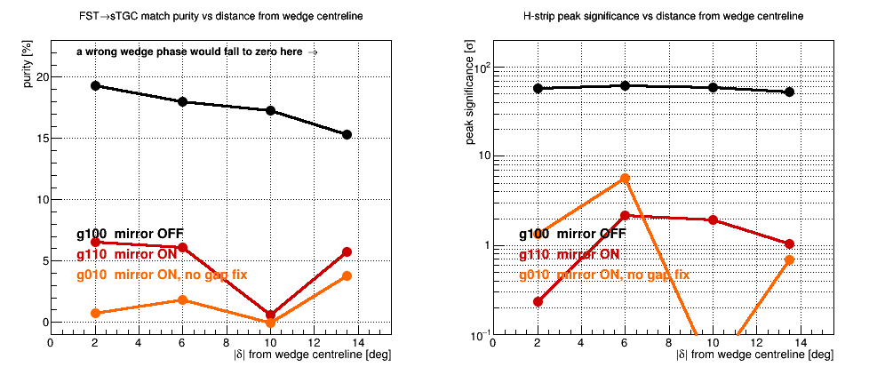 |
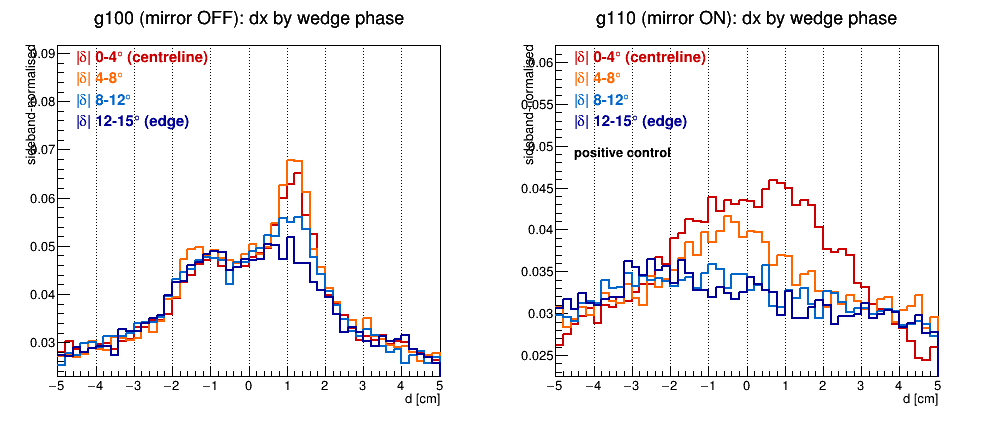 |
| Purity and H-strip peak significance against |δ|. Mirror off (black) is flat all the way to the wedge edge; both mirrored configurations sit at the noise floor everywhere. | The dx distributions themselves, 4 disks summed, each normalised to its own sideband. Left mirror off: the same peak at every |δ|. Right mirror on: a bump only in the centreline bin, gone by 8-12°. |
| |δ| from wedge centreline | g100 — mirror OFF | g110 — mirror ON | g010 — mirror ON, no gap fix | ||||||
|---|---|---|---|---|---|---|---|---|---|
| purity | H centre | H signif. | purity | H centre | H signif. | purity | H centre | H signif. | |
| 0-4° (centreline) | 18.5% | +0.82 cm | 75.7 | 5.9% | +1.01 | 3.2 | 4.5% | +0.73 | 2.7 |
| 4-8° | 18.5% | +0.86 cm | 78.6 | 6.9% | -1.90 | 7.0 | 6.7% | -1.98 | 2.9 |
| 8-12° | 16.7% | +0.92 cm | 77.3 | 0.8% | -3.69 | 1.3 | 1.0% | -3.53 | 1.4 |
| 12-15° (wedge edge) | 18.1% | +0.89 cm | 66.3 | 7.0% | +2.02 | 0.1 | 0.6% | +1.61 | 0.1 |
That settles the reconstruction question but not the hardware one: if the detector really is front/back inverted with respect to AGML, the inversion does not reach the strip φ. The strip-to-channel mapping in StFstDb sits between the two and was tuned on data, which is where such an inversion would be absorbed. What it would still affect is wedge z and the material — and StFstHitMaker assigns the disk centre z to every hit (proposal_fst_outer_overlap.txt), so reconstruction is currently blind to that too.
Caveats, stated rather than buried: (1) the V (dx) significance falls across the bins while H is stable — that is the two-halves double peak in dx degrading a single-Gaussian fit as statistics drop, not lost correspondence, and the combined purity counts both and stays flat; H is the clean channel here. (2) The mild edge decline seen with partial statistics (19.3 → 15.4%) was a fluctuation; with all 15 jobs the mirror-off column is flat to within its own scatter.
For the AGML tag work (see proposal_fst_wedge_flip.txt): because the constants track AGML rather than correct it, a new tag that changes the front/back parity must leave kFstzFilp/kFstzDirct untouched. Only the wedge z and the material should move; the reconstructed hit φ must come out unchanged, and this blind measurement is the acceptance test for that.
The wedge-phase test above says the composite strip→φ map is right. It does not say which of its pieces are right — two errors that compose to the identity are invisible to it. Following the question of whether the FST sensor-to-APV connection is what we assumed, these checks go after the individual pieces, using MuDst hits only and no tracking.
The selection is the key: at zero field a track has the same φ on all three disks and the same r/z, so pairs of hits are matched on r/z — polar angle, which is independent of φ. The selection therefore cannot bias the φ answer. (A first attempt matched pairs within a wedge using a |Δφ| cut; that is swamped by combinatorics — about 13 random same-wedge pairs per event — and it also cuts away the very population a mirror would produce. Both traps are avoided here.)
sensor 0 (inner) : meanPhiStrip 0 .. 127 128 strips over 30 deg sensor 1 (outer) : meanPhiStrip 0 .. 63 sensor 2 (outer) : meanPhiStrip 64 .. 127
So phiOuter - D*meanPhiStrip*pitch with s in [0,127] spans the full 30° and the two outer sensors do occupy different halves of the wedge — they are not stacked on each other. Sensor identity enters the geometry only through the ±0.5° gap term. (script/fstStripRange.C)
That also exposes an asymmetry worth knowing about in StFstHitMaker: the inner row is built from the phiStart edge running one way, the outer row from the phiStop edge running the other way —
inner: local[1] = phiInner + D*meanPhiStrip*pitch; // starts at the phiStart edge, runs +D outer: local[1] = phiOuter - D*meanPhiStrip*pitch; // starts at the phiStop edge, runs -D
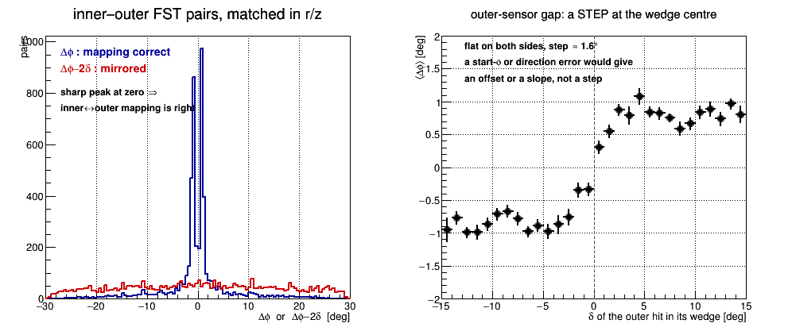 |
| Left: Δφ for r/z-matched inner–outer pairs (blue) against the mirrored hypothesis Δφ−2δ (red). Right: <Δφ> versus where the outer hit sits in its wedge — a step, not a trend. |
| hypothesis | predicted peak | within ±2° | rms |
|---|---|---|---|
| mapping correct | Δφ = 0 | 69.0% | 6.3° |
| inner↔outer mirrored | Δφ = 2δ | 10.1% (flat) | 15.5° |
A sharp peak at zero, and the mirrored variable is flat. So the opposite numbering directions in the code are self-consistent with the hardware: hits from one track line up in φ across the inner and outer rows. The same peak excludes a swap of the two outer sensors, which would have displaced outer hits by 15° and put the peak at ±15° instead of at 0. (script/fstInnerOuter3.C)
This is the cleanest discriminator on the page. <Δφ> against the outer hit's position in its wedge, with no same-wedge cut so there is no truncation at the wedge edge:
delta_out -14.5 ... -1.5 | +1.5 ... +14.5 <dphi> -1.18 ... -0.35 | +0.58 ... +0.63 step = +1.63 deg
Flat on both sides with a step at the wedge centre. That is what a per-half offset does. A wrong phiStart would shift the whole wedge by a constant; a wrong direction sign would give a linear trend across the wedge. Neither makes a step at the centre.
| state of the gap term | predicted step | compatible? |
|---|---|---|
| applied with the correct sign | 0° | no |
| not applied at all | 1.0° | marginal |
| applied with the wrong sign | 2.0° | yes |
Measured +1.63° against 2.0° predicted. The measurement is diluted towards zero by the flat combinatoric background inside the ±4° window, so it is a lower bound — and it excludes 0° outright. applyFstGapFix flips each sensor's half-gap, changing the step by exactly −2.0°, so the fix is right in form and in size. (script/fstGapSign2.C)
| piece of the mapping | status | evidence |
|---|---|---|
| global wedge φ phase | correct | wedge-phase test, 66-79σ flat to the wedge edge |
| inner↔outer relative mapping | correct | r/z-matched pairs peak at Δφ=0, 69% vs 10% |
| outer sensor half assignment | correct | same peak; a swap would sit at ±15° |
| 1° outer-sensor gap sign | wrong as-is | step of +1.63° at the wedge centre |
| how the pieces factorize | open | see below |
Why a real front/back flip can still be true. These measurements constrain the composite strip→φ map, not its factorization. "The physical flip is real and we count φ backwards within a wedge" composes to the identity: the reconstructed φ comes out correct — which is what we measure — while the description of why is wrong. The practical consequence is that a new AGML tag which changes the front/back parity must change the counting convention in the same commit. Fixing either one alone breaks a composite that currently works.
The peak does not sit at zero. Fitted centres for the best configuration (g100, Primary):
| disk | V (dx) centre | σ | signif. | H (dy) centre | σ | signif. |
|---|---|---|---|---|---|---|
| 0 | +1.265 cm | 0.466 | 37 | +0.987 cm | 0.387 | 89 |
| 1 | +1.182 cm | 0.473 | 38 | +0.943 cm | 0.399 | 68 |
| 2 | +1.174 cm | 0.438 | 36 | +0.791 cm | 0.430 | 79 |
| 3 | +1.120 cm | 0.493 | 31 | +0.746 cm | 0.457 | 59 |
The width, 0.39-0.49 cm, is the real FST→sTGC pointing resolution. The offset is 2-3 times that, at 30-90 sigma, on every disk.
The dx distribution has two peaks. Splitting the blind diagnostic by quadrant (A=x>0,y>0; B=x>0,y<0; C=x<0,y<0; D=x<0,y>0), summed over the 4 disks, g100 Primary:
| quadrant | dx centre | signif. | dy centre | signif. |
|---|---|---|---|---|
| A +x,+y (upper right) | -1.21 cm | 20 | -2.62 cm | 4 |
| B +x,-y (lower right) | -1.63 cm | 7 | +0.71 cm | 35 |
| C -x,-y (lower left) | +1.10 cm | 10 | +0.97 cm | 68 |
| D -x,+y (upper left) | +1.22 cm | 43 | -2.54 cm | 5 |
| x>0 (A+B) / x<0 (C+D) | -1.32 / +1.22 cm — antisymmetric | top (A+D) -2.68, bottom (B+C) +0.89 cm | ||
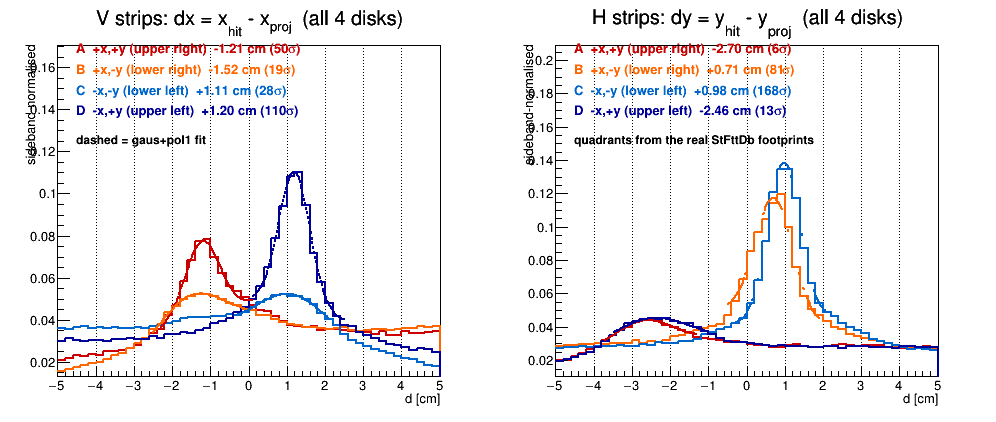 |
| g100 Primary, 4 disks summed, each curve normalised to its own 2-5 cm sideband. Left: dx splits by the sign of x. Right: dy does not split — all four quadrants peak on the same side. |
Yes — the two peaks in X are the two halves. The answer is clean:
So the thing to check against the sTGC survey is not "a 1 cm offset" but two separate numbers: a half-separation in x wrong by ~2.4 cm total (~1.2 cm per half, both toward the beam), and a common y offset of ~+0.9 cm. The x number is the one that looks mechanical — the halves are the parts that move.
Correcting this should raise the matching efficiency directly: the offsets are 2-3 times the 0.45 cm match width, so at present a large part of the genuine matches falls outside any window centred on zero.
TrackFitter::kUseSpacePoints decides whether a hit enters the fit as a 3D point or as a 2D measurement on a geometry plane. In one line: true = trust the hit's stored 3D position; false = rebuild the position from strip numbers plus AGML geometry. Everything below follows from that.
| kUseSpacePoints = true (current default) | kUseSpacePoints = false | |
|---|---|---|
| genfit measurement | ProlateSpacepointMeasurement (FST), SpacepointMeasurement (FTT) | PlanarMeasurement |
| what is measured | 3D global point (x,y,z) | 2D (u,v) within the sensor plane |
| FST position source | fh->getX/Y/Z() — the global xyz from the MuDst via StFwdHitLoader | re-derived: _localPosition (strip r, φ) placed on the AGML sensor plane |
| FTT position source | global xyz | global xyz projected onto the plane |
| geometry used | none for the measurement itself | mFstSensorPlanes[108], mFttPlanes[32] from fGeom.root |
| z of an FST hit | the hit's own z = disk centre (151.75/165.25/178.78) | the plane's z = true per-sensor z (4 values per disk) |
| the 1° gap | from kFstStripGapPhi, sign currently wrong; applyFstGapFix corrects it | from the sensor's own AGML shape (Phi1/Phi2) — no constant involved |
| strip-direction convention | implicit: StFstHitMaker used kFstzFilp[disk] × kFstzDirct[wedge] | none — the front/back flip is carried by the AGML node matrix |
| covariance | fh->_covmat, 3×3 global, prolate, largest error radial | CovMatPlaneLocal, 2×2 in-plane |
| hit types handled | all four (FST, FTT, PV, EPD) | FST and FTT only — PV and EPD have no plane |
| sorting parameter | insertion index | plane id (FST 0-107, FTT +108) |
| MC — StFstFastSimMaker | works (smeared global position) | works by inversion: back-computes strip indices from the position (StFstFastSimMaker.cxx:460-484), so it can only reproduce whatever convention StFstHitMaker has — it cannot expose a convention error |
| MC — StFstSlowSimMaker | works | the one to use: emits StFstRawHits that run through StFstRawHitMaker → cluster maker → StFstHitMaker, the same path as data, so the strip indices are genuine |
StFstSlowSimMaker.cxx:334 digitises with sgn = kFstzFilp[disk-1] * kFstzDirct[moduleIdx-1] — the same constants StFstHitMaker uses to reconstruct. So MC runs position → strip → position with one convention applied in each direction, and any convention error cancels exactly: the reconstructed hit lands back on the truth hit whether the convention is right or wrong.
Data has only the strip → position half — the hardware did position → strip — so nothing cancels and the error is a real mis-positioning. That asymmetry is why this survived for years, and why it took data against an independent detector (the sTGC) to expose it. Any future convention change must be validated on data; MC closure will look perfect either way.
AGML carries both the wedge orientation and the 1° gap. Read straight out of fGeom.root:
FTUS inner : shapePhi = [345.00, 375.00] = +-15 deg, no gap
FTUS outer : shapePhi = [344.50, 359.50] = -15.5 .. -0.5 deg
shapePhi = [ 0.50, 15.50] = +0.5 .. +15.5 deg <-- the 1 deg gap is right here
wedge orientation: the 180 deg x-rotation, visible as zz = -1 in the node matrix
The old decode used neither: it normalised the V axis to counter-clockwise (discarding the orientation) and substituted hardcoded constants, and it assumed 128 strips spread uniformly over 30° with no gap. Measured consequence (script/fstPlanarDecode.C): the decoded φ offset was anti-correlated with the real one on the middle disk — every wedge there mirrored.
| FST disk | hits | slope d(real)/d(decoded) | correlation |
|---|---|---|---|
| 0 | 6417 | +0.371 | +0.377 |
| 1 (middle, kFstzFilp = -1) | 6640 | -0.352 | -0.358 |
| 2 | 6582 | +0.400 | +0.406 |
Five defects, all in the planar path. The fix was not to patch the missing constant in, but to stop discarding the geometry: keep the real V axis, and take the strip → φ mapping from the sensor's own shape. kFstzFilp, kFstzDirct and kFstStripGapPhi no longer appear in this path at all.
| # | defect | effect | fix |
|---|---|---|---|
| 1 | EPD/FCS-pres hits have no plane, and addEpdHits appends them to the shared seed for every track type | ~2.1 hits/event silently dropped, from Global and Primary too | keep them as spacepoints, like the PV |
| 2 | missing kFstzFilp[disk] in the decode | every wedge on the middle disk mirrored, up to ±15° | gone — the node matrix carries the flip |
| 3 | _localPosition is raw strip indices, so the loader's φ corrections never reach it | no gap term at all, ~1° per half | gap read from the sensor shape's Phi1/Phi2 |
| 4 | sensor → FTUS mapping used (index%3)+1 | inner hits on an outer plane and vice versa, 1.4 cm z error on 2 sensors of 3 | mapping measured from data: 0→FTUS_3, 1→FTUS_1, 2→FTUS_2 |
| 5 | hardcoded volume path /FSTM_1/FSTD_<d>/FSTW_<w>/FTUS_<s> | every lookup fails on any misaligned geometry — all 108 planes fall back to the origin, silently | sensors found by physics: disk from z, wedge from the bisector, sensor from the shape |
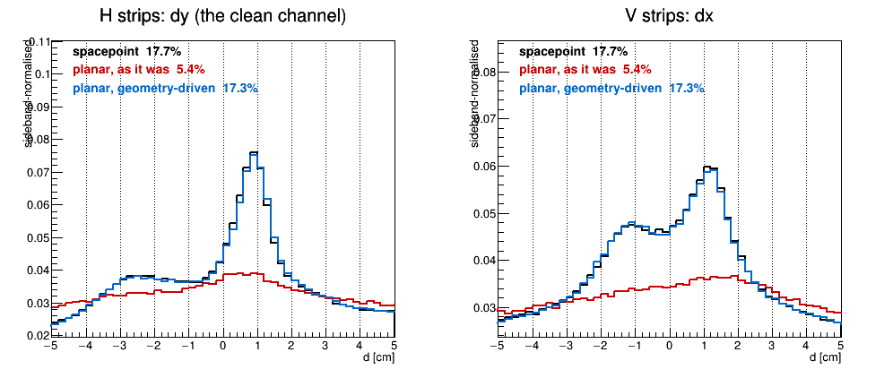 |
| The blind FST→sTGC peak, 4 disks summed, each curve normalised to its own sideband. Black = spacepoint, red = planar as it was, blue = planar after the fixes. Black and blue lie on top of each other. |
| configuration | files | purity | peak centre | σ | mean signif. |
|---|---|---|---|---|---|
| spacepoint (kUseSpacePoints = true) | 5 | 17.72% | +1.027 cm | 0.447 | 53.0 |
| planar, as it was | 5 | 5.43% | +1.093 cm | 0.691 | 2.7 |
| planar, geometry-driven | 3 | 17.29% | +1.042 cm | 0.452 | 40.9 |
So the two paths now agree within statistics. The planar path is the one to use for alignment, not because it resolves better today — it does not — but because it is the only one in which the geometry moves the FST hits at all.
Built with build_geom_misalign.C against his library (2026-09-17), no changes to our tree. His y2024 = FSTMv1sm and y2025 = FSTMv2sm, differing only in the modulus2 array that places each wedge front or back — a ready-made parity A/B.
| geometry | FST parity vs the reconstruction constants | blind purity (4000 ev) | peak centre |
|---|---|---|---|
| ours, y2023 FSTMv1 (full, ideal) | 36 / 36 agree | 17.47% | +1.030 cm |
| Flemming y2024, FSTMv1sm | 36 / 36 agree | 17.02% | +1.020 cm |
| Flemming y2025, FSTMv2sm | 0 / 36 — every wedge flipped | not yet run — see the caveat below | |
y2024 gives the same answer as our own geometry despite a completely different volume tree, which is the 0th-level integration test passing. Caveat on the parity question: φ alone cannot decide it. Flipping the wedge flips the local→global φ map, so v2 with the current strip convention will mirror every hit — but re-deriving the convention against v2 restores it exactly. The two are degenerate in φ; only z breaks the tie, and that is a ~1.7 mm effect (see below), currently below what this test resolves.
With the survey tables applied (~3 mm half offsets) the FST region develops 66 volume extrusions, max 2.03 mm — volumes poking out through the FSTM mother, 18 of them the silicon itself. Zero true volume-volume overlaps: sensors and their wedge material receive the same half- and wedge-level misalignment and move together rigidly, so nothing collides. The FSTM envelope simply has only ~1.3 mm of clearance.
It can be avoided for now by splitting the survey: the average goes to fstOnTpc, which moves all of FSTM, and only the differential stays per half.
fstOnTpc t0 = +0.14876 t1 = -0.31702 cm (the average)
hssOnFst Left -0.07750 / +0.01600 cm (the residual, max 0.775 mm)
Right +0.07750 / -0.01600 cm
| extrusions inside FSTM | true overlaps | FST at CAVE level | |
|---|---|---|---|
| identity tables | 0 | 0 | 0 |
| survey, all in hssOnFst | 66, max 2.03 mm | 0 | 0 |
| survey, split as above | 0 | 0 | 0 |
The split is physically identical — 0 of 108 sensors move against the all-in-hssOnFst version — so it is pure bookkeeping. It is a reprieve, not a cure: per-wedge or per-sensor constants are differential by definition and cannot be absorbed into fstOnTpc, so FSTM still needs alignment headroom. Extrusions are not cosmetic for GEANT navigation, though our tracking only reads matrices and shapes and is unaffected. The sTGC envelopes are untested and are the bigger worry, at ~1 cm.
The FST survey entry $STAR/StarDb/Geometry/fst/hssOnFst.20211110.000001.C is the only non-trivial one:
//FST Left Half //FST Right Half row.t0 = 0.07126; row.t0 = 0.22626; // x offset [cm] row.t1 = -0.30102; row.t1 = -0.33302; // y offset [cm]
That is 0.7-2.3 mm in x and ~3.0-3.3 mm in y. What we measure between FST and sTGC is ~1.2 cm per half in x (antisymmetric; the residual points towards the beam, so the correction moves each half outward and the two halves ~2.4 cm apart) and a ~3.4 cm top/bottom split in y — far too large to come from the FST survey, and the same size as the 1-2 cm offsets the sTGC survey shows. So our number is an sTGC statement, and it is a specific prediction for the survey to confirm: a half-separation error of ~2.4 cm total in x, plus a ~3.4 cm top/bottom split in y (top -2.6, bottom +0.85).
StFstDbMaker/StFstDb.cxx:56-70 takes a single row from each of the half and wedge tables:
Survey_st *hssOnFst = tables[1]; mGeoHMatrixHssOnFst.SetTranslation(&hssOnFst->t0); Survey_st *wedgeOnHss = tables[2]; mGeoHMatrixWedgeOnHss.SetTranslation(&wedgeOnHss->t0);
Only sensorsOnWedges is iterated (for ... sensorsOnWedges++). So populating hssOnFst with its 2 real rows and fstWedgeOnHss with 36 gives the left-half offset applied to both halves, and wedge 1's offset applied to all 36 wedges. AGML indexes the same tables correctly (row="iwedgem+12*idisk", row="halfid"), so geometry and reconstruction would disagree.
The tables themselves are not the problem — they are already the right size and are filled in loops: hssOnFst 2 rows, fstWedgeOnHss 36, fstSensorOnWedge 108, and on the sTGC side 16 / 4 / 1. Alignment fills in values rather than creating structure, and no geometry file change goes with it.
This only affects the spacepoint path: the planar path takes alignment from AGML, which indexes the same tables correctly. There is a second defect there too — StFstHitMaker applies the survey matrix and then its exact inverse, so no survey reaches a hit position at all — and the two mask each other, so they have to be fixed together. Both are written up in proposal_spacepointmode_fix.txt.
Use false (planar). As of 2026-09-24 that path is geometry-driven and measures the same as the spacepoint path — 17.29% against 17.72% on the same data (section 5) — and it is the only mode in which the geometry moves the FST hits at all, so it is the one alignment can use. It should still become a macro/config switch rather than a compile-time constant, since flipping it changes every job.
The remaining defects all sit in the true path and none of them block alignment: the DB survey is applied and then exactly cancelled, StFstDb reads row 0 only of the half and wedge tables, the 1° gap carries the wrong sign, and every hit gets the disk-centre z. Written up in proposal_spacepointmode_fix.txt as a lower-priority cleanup for that path.
Everything below is measured with the sTGC hit positions still coming from StFttDb's hardcoded per-quadrant constants. That is the point: it is the input to the next step, in which StFttDb takes those positions from the DB survey tables instead and the residual should collapse towards zero.
Five changes landed before this measurement was taken, in this order:
That last one gave a clean check of the whole chain. The blind residual in y moved by +3.19 / +3.25 / +2.93 / +3.01 mm across the four stations against an FST move of −3.197 mm: 1:1 to 3%, and flat. A vertex-anchored track would pivot and give a 1 mm rise from station 1 to 4 (the lever arm zsTGC/zFST ≈ 2); there is none, at 59-183 σ. So the track translates bodily — the TPC vertex is contributing very little to constraining these fits, which is worth knowing before anyone leans on vertex-constrained forward tracks. dx is not understood: it moved −5.05 mm against −1.62 mm expected, factor 3.1, also flat.
30 files of zero-field run 23063028, FST+vertex tracks projected to the sTGC, sTGC hits never added to the track, quadrants taken from the real StFttDb footprints (not from the signs of x and y — the four quadrants do not meet at the origin).
| quadrant | dx [cm] | dy [cm] | direction |
|---|---|---|---|
| A (x>0, y>0) | −1.06 | −1.94 | towards the axis |
| B (x>0, y<0) | −1.26 | +1.02 | towards the axis |
| C (x<0, y<0) | +0.55 | +1.31 | towards the axis |
| D (x<0, y>0) | +0.68 | −1.39 | towards the axis |
Median over the four stations; station 3 quad C has dx = −2.33 at only 5.6 σ against +0.71/+0.71/+0.39 elsewhere and a mean would be dragged by it. Station 1 quad A has no V-strip entries at all — the H/V swap suspected since 2026-07-21 — so that one cell stays uncorrected.
Every sign points inward. The reconstructed sTGC hits sit systematically ~1-1.9 cm closer to the beam axis than the tracks say. That is a radial contraction, not a translation, and it is the main thing to keep in mind about the numbers below: sixteen per-quadrant offsets can absorb it, and will drive the residual to ~0, but if the cause is a scale (an FST radial error, the strip pitch, something else) the constants will not generalise. A pure z error cannot explain it — it would need Δz ≈ 10 cm at r ≈ 46 cm. Worth one plot before these are trusted as alignment: split a quadrant's residual by radius. Flat means a genuine offset, sloped means a scale.
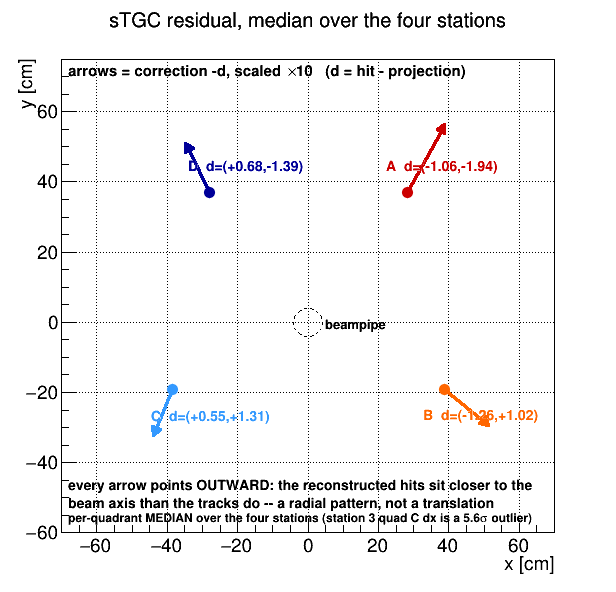 |
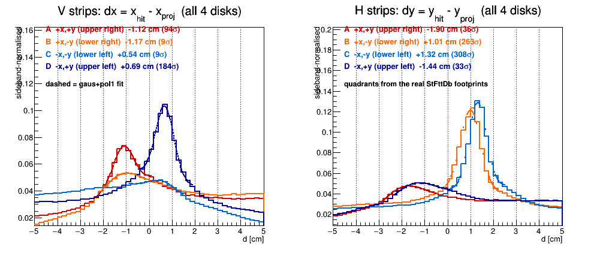 |
| correction −d at each quadrant centre, ×10. All four outward. | the same thing as distributions, all four stations summed. |
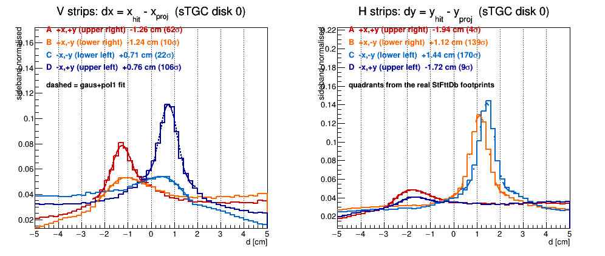 |
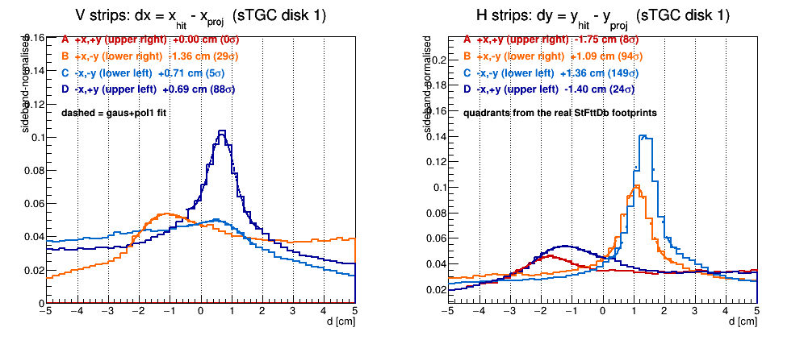 |
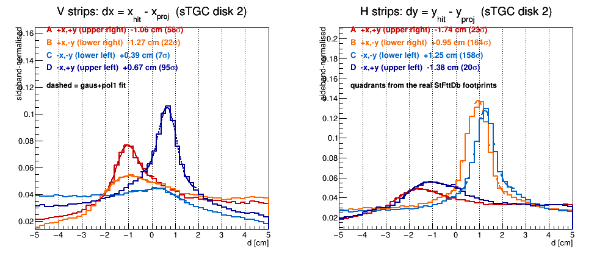 |
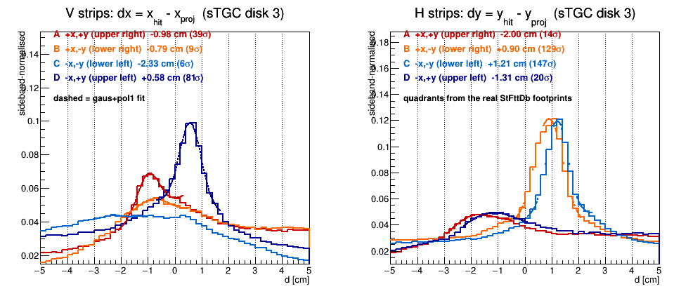 |
| station 1 | station 2 | station 3 | station 4 |
StFttDb now has a switch, DB by default, in which the hardcoded per-quadrant constants are not used at all. The offsets become
AGML placeholder + stgcOnTpc + stationOnStgc[station] + pentOnStation[4*station+pent]
The tables were written as (StFttDb origin − AGML placeholder) + alignment, so the hardcoded term cancels algebraically and what comes out is the true position — and it is the same quantity AGML computes from the same inputs. Geometry and hit positions stop being two things kept in step by hand. Checked on data: quadrant A station 1 comes out (2.15244, 12.2029, 312.342) cm against the STFM_1 node at (2.152, 12.203, 312.342).
Because the hit itself moves, the sTGC correction acts on the residual 1:1 — no lever arm, unlike the FST one above, since nothing goes through the track fit. So one iteration should be enough to centre it.
Two things had to move with it. FwdTracker read the quadrant boundaries from StFttDb's statics, which stay at the hardcoded placeholder while the hits move 1-2 cm — every hit near a quadrant edge would have been mislabelled, silently. And the table generator's absolute form is valid only while StFttDb is in hardcoded mode: from the next iteration the update is new = previous + delta, now enforced rather than documented.
Section 7 is the input state, with sTGC hit positions still coming from StFttDb's hardcoded constants. This is the same measurement with the DB survey tables driving those positions instead. Same 2500 events in both, one flag apart (useDbGeometry), so nothing here is a statistics or sample difference.
| station | dy, tables OFF | dy, tables ON | σ |
|---|---|---|---|
| 1 | +1.301 | +0.327 | 9.3 |
| 2 | +1.277 | +0.350 | 6.5 |
| 3 | +1.092 | +0.346 | 8.3 |
| 4 | +1.042 | +0.284 | 7.3 |
All four stations summed: dy +1.175 → +0.325 cm, a 72% reduction, at σ ≈ 16. Entries are essentially unchanged (59651 → 56502), so this is the peak moving, not acceptance being lost.
dx goes +0.630 → −0.446: it overshoots through zero. The magnitude still falls by ~29%, but the sign flip says the dx correction is too large by roughly a factor two. That is consistent with dx being the coordinate we do not yet understand — see the factor-3.1 response in section 7 — and it is the obvious thing for the next iteration to fix, via script/stgcTableAddDelta.py rather than by regenerating the table.
The controlled 2500-event A/B below is confirmed at campaign scale. 90 jobs, all of them reporting the DB tables and zero falling back:
| station | dy, hardcoded | dy, DB tables | σ |
|---|---|---|---|
| 1 | +1.324 | +0.346 | 197 |
| 2 | +1.296 | +0.346 | 132 |
| 3 | +1.122 | +0.373 | 195 |
| 4 | +1.095 | +0.363 | 165 |
dy −74%, uniform across stations, agreeing with the 2500-event A/B (+0.325) to well within the spread. Three independent measurements now give the same answer.
| quadrant | dy before | dy after | verdict |
|---|---|---|---|
| A (x>0,y>0) | −1.86 | +0.82 … +0.91 | overshot |
| D (x<0,y>0) | −1.46 | +0.83 … +1.32 | overshot |
| B (x>0,y<0) | +1.02 | +0.31 … +0.36 | good |
| C (x<0,y<0) | +1.31 | +0.35 … +0.36 | good |
B and C land near zero and are consistent station to station. A and D crossed zero and overshot by ~0.9 cm. That is not a failure of the mechanism — the 20211112.000002 table was derived from the earlier 5-file ideal-geometry run, so its corrections do not match the residual the misaligned-FST geometry actually leaves. This is precisely the case the incremental update exists for: script/stgcTableAddDelta.py, new = previous + delta. Regenerating the table absolutely would be wrong now that StFttDb runs DB-driven.
dx likewise overshoots, +0.65 → −0.39 summed. And the dx widths grew on stations 1 and 3 (0.41→0.53) while the dy widths narrowed (0.39→0.34) — a rigid shift should not broaden anything, so the dx correction is not behaving as a pure translation. That ties back to the unexplained factor-3.1 dx response and to the residual being radial rather than translational.
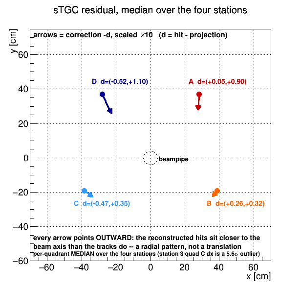 |
|
| before — hardcoded StFttDb. All four arrows outward, 1–1.9 cm. | after — DB tables in. B and C nearly gone; A and D reversed, having overshot. |
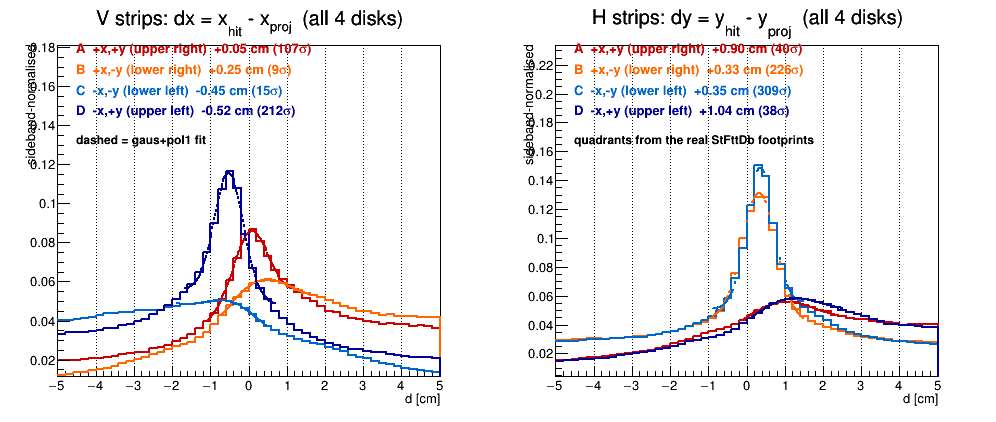 |
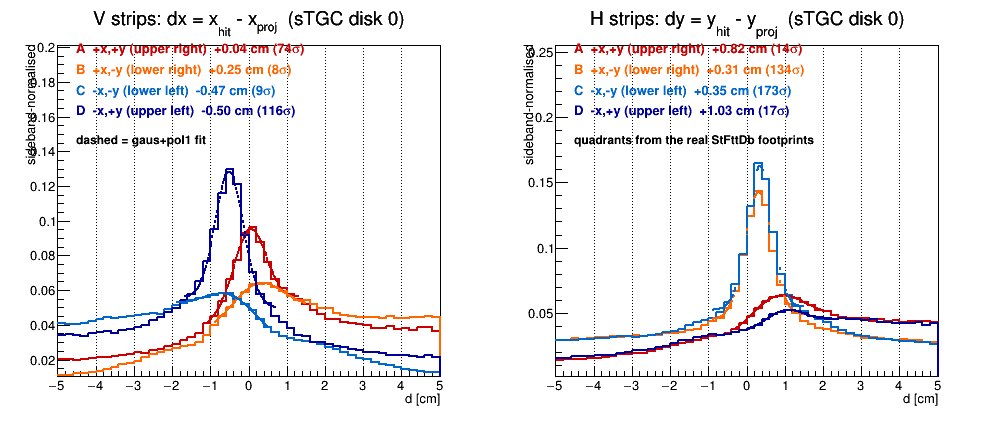 |
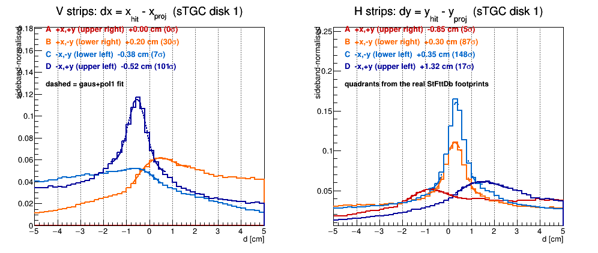 |
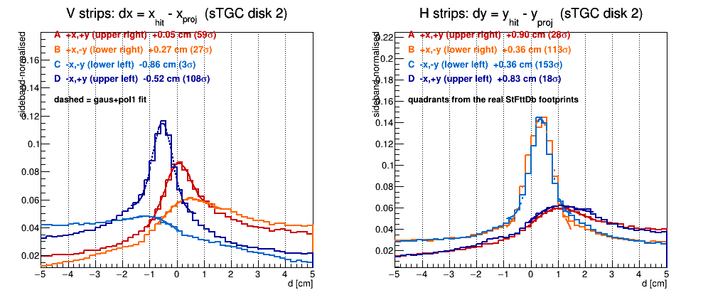 |
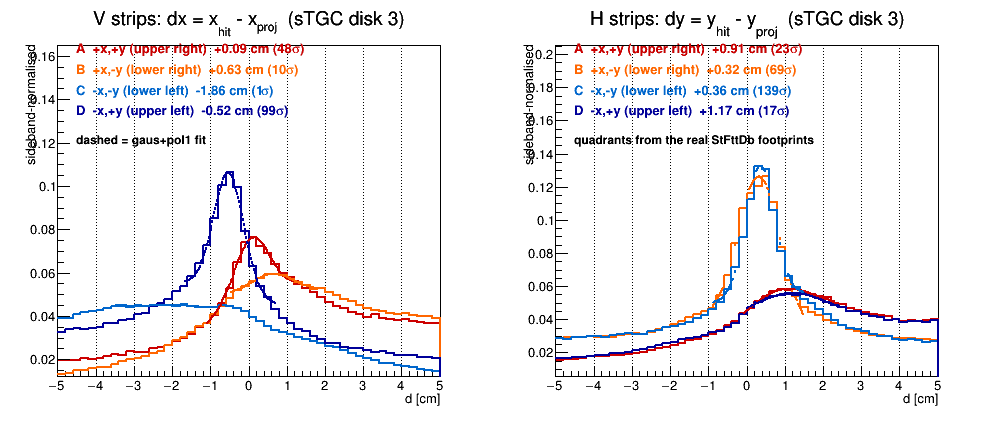 |
| all 4 stations, tables in | station 1 | station 2 | station 3 | station 4 |
90 jobs, 1.17M events. Compare against the same plots in section 7, which are the hardcoded-StFttDb input state over 30 files.
Slide 2 of the 2026-09-29 deck asks for spacepoint / planar / planar+tables side by side. All three are the same 2500 events; stage 1 needed its own build because kUseSpacePoints is a compile-time constant.
| stage | dx [cm] | dy [cm] | σdy | radial |d| [cm] |
|---|---|---|---|---|
| 1 spacepoint | +1.159 | +0.852 | 19.4 | 1.44 |
| 2 planar | +0.630 | +1.175 | 16.4 | 1.33 |
| 3 planar + FTT tables | −0.446 | +0.325 | 16.5 | 0.55 |
Spacepoint and planar essentially trade dx against dy rather than one being better — which is the same conclusion as the 17.72% vs 17.29% purity comparison in section 5. The real gain comes from the tables. Since the residual is radial (section 7), the combined magnitude is the honest single number: 1.44 → 1.33 → 0.55 cm, a 62% reduction.
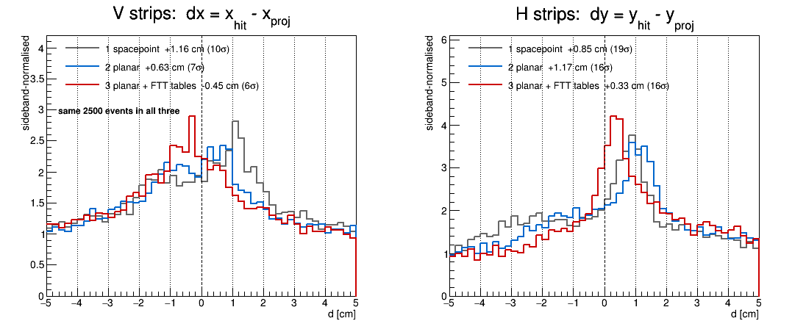 |
| Sideband-normalised, so three samples overlay; read the fitted centre, not the height. |
Both passed every structural check and still gave wrong physics, which is worth recording as a pattern:
The second is the reason to be careful with "it works today" when the code has only ever touched statics.
A 2500-event run has ~7k entries where the 30-file batch has 30.5M — a factor 4000, so fit significances differ by ~65×. A significance of 2–4 in a smoke test is not a failure; it corresponds to 130–260 at batch statistics. This nearly caused the opposite call to be made from the smoke test alone.
The point of this section is not a finished sTGC alignment. It is a large, 0th-order misalignment applied in the DB tables, so that Xihe's alignment program starts from something close rather than from ideal geometry. The fine structure is his to solve.
pentOnStation.20211112.000003 = .000002 + delta, applied with script/stgcTableAddDelta.py. 90 jobs, 1.17M events, all 90 on the DB tables.
| station | hardcoded | iteration 1 | iteration 2 | σ |
|---|---|---|---|---|
| 1 | +1.324 | +0.346 | +0.003 | 227 |
| 2 | +1.296 | +0.346 | −0.020 | 165 |
| 3 | +1.122 | +0.373 | −0.002 | 212 |
| 4 | +1.095 | +0.363 | −0.001 | 188 |
dy from ~1.3 cm to below 200 µm, and the fit significances rose — the peak sharpened rather than smeared. Per quadrant, 23 of the 32 cells are well measured (σ > 10) and all of those sit within ±0.10 cm, most within ±0.02 cm.
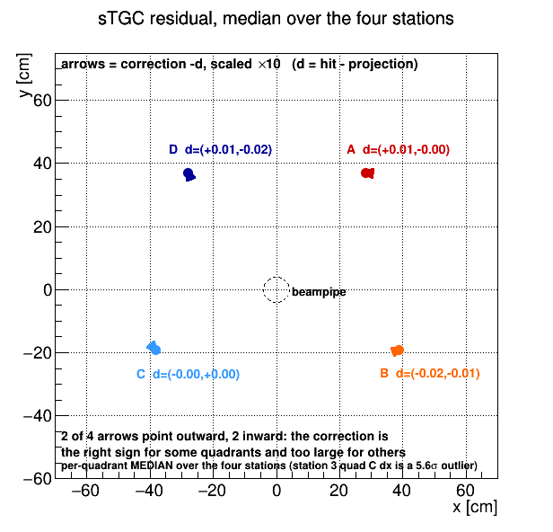 |
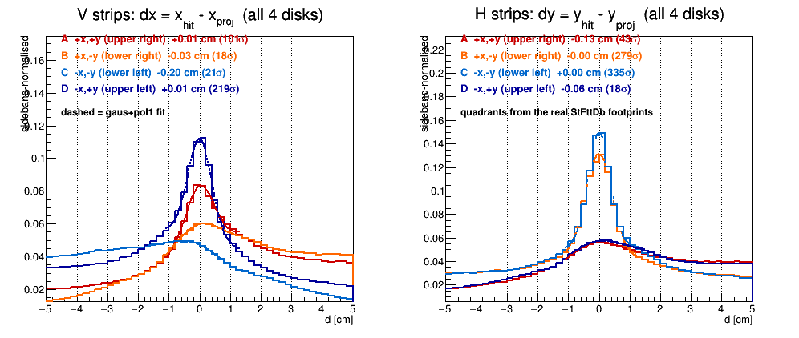 |
| correction vectors after iteration 2 — compare section 7 | quadrant split, all 4 stations |
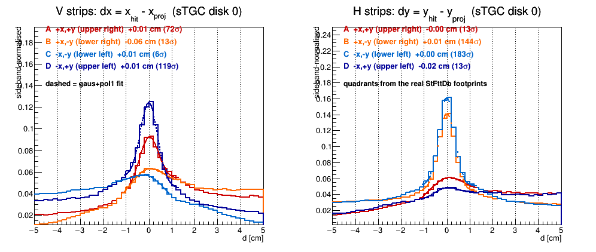 |
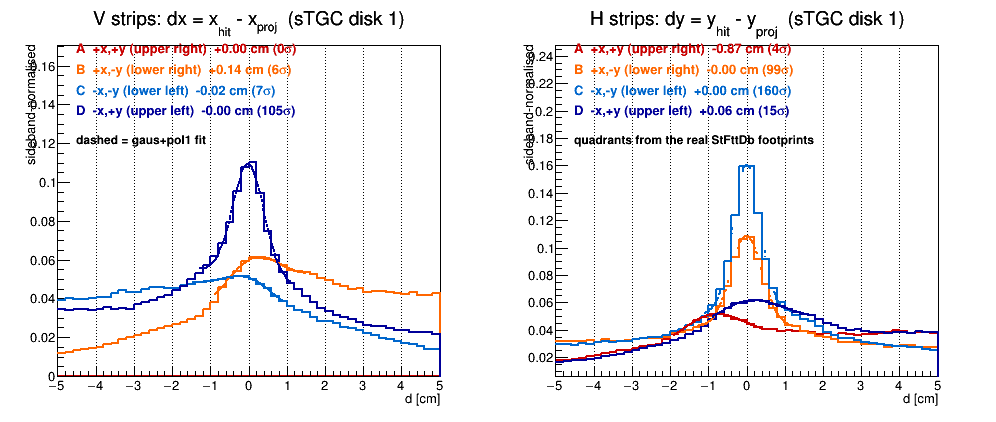 |
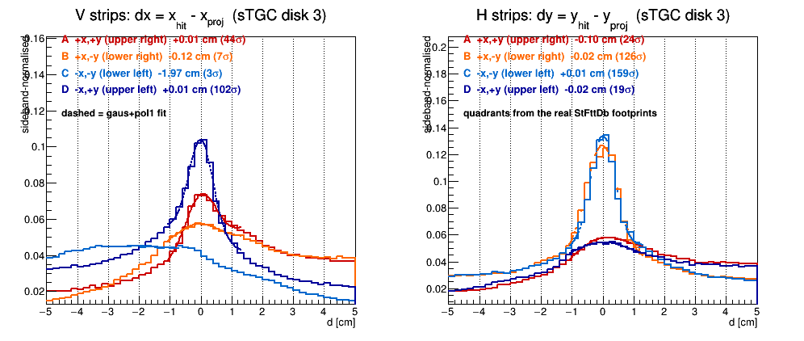 |
|
| station 1 | station 2 | station 3 | station 4 |
With the means at zero, a residual radial dependence remains — the per-quadrant translations cannot represent it by construction:
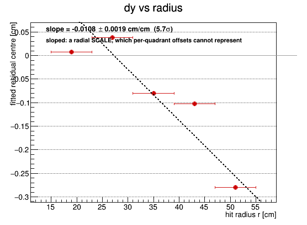 |
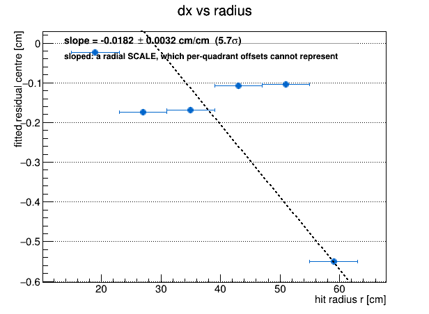 |
| dy: −0.0108 cm per cm of radius, i.e. ~1% | dx: steeper but not monotonic — see the caveat |
dy runs from +0.008 cm at r = 19 cm to −0.279 cm at r = 51 cm. A translation leaves a residual flat in r; this is not flat, so a third iteration on per-quadrant offsets would be chasing its own tail. A scale of ~1% is the kind of thing a pitch or a lever-arm mismatch produces, not a placement error, and it is exactly the structure an alignment program with the right degrees of freedom should solve. That is Xihe's tool, not this one.
Two honest caveats on those slopes, so they are not over-read:
Every campaign up to here ran fttNoAdd=1: the tracker searched for sTGC hits and filled the diagnostics, but never put one on a track. So the planar FTT measurement had never executed in the Kalman fit. This run turns that on. It differs from the iteration-2 campaign in one field (DIAG "2,1,0"→"2,0,0"), same 90 files and same 13000 events each, which makes iteration 2 an exact control arm. 90/90 jobs clean.
Pickup probability per sTGC station, Primary tracks, 4.2M tracks:
| station | 1 | 2 | 3 | 4 | mean |
|---|---|---|---|---|---|
| x — V strips | 0.2297 | 0.2052 | 0.2165 | 0.2407 | 0.223 |
| y — H strips | 0.1835 | 0.1828 | 0.1965 | 0.2043 | 0.192 |
| diagonal u/v | 0.0000 | 0.0000 | 0.0000 | 0.0000 | 0.0000 |
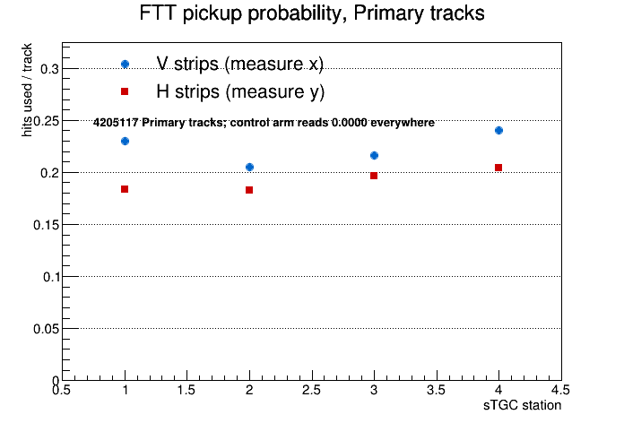 |
Pickup split by quadrant (Pos+Neg summed, x/y per station):
| quadrant | tracks | s1 | s2 | s3 | s4 |
|---|---|---|---|---|---|
| North-top | 1.22M | .321/.240 | .318/.285 | .293/.263 | .342/.274 |
| North-bottom | 0.94M | .178/.147 | .169/.125 | .126/.134 | .165/.138 |
| South-top | 1.16M | .259/.218 | .162/.195 | .281/.247 | .284/.258 |
| South-bottom | 0.90M | .122/.100 | .146/.089 | .124/.106 | .127/.110 |
The quadrant table above uses all tracks as the denominator, which bakes in the sTGC design acceptance gap below the beampipe. FST covers nearly 2π while the four sTGC pentagons cluster above and to the sides of the beampipe, so FST-seeded tracks projecting into the gap can never pick up a hit and the raw number is diluted by geometry working as designed.
The existing histograms could not separate the two, because h2FttProjXY is filled only inside the loop over FTT points — i.e. only for tracks that already matched. Adding the missing denominator (h2FttProjAllXY, the projection of every track to each plane) and restricting to cells where the detector demonstrably is:
| disk | orientation | top | bottom | bot/top |
|---|---|---|---|---|
| 0 | x (V) | 0.313 | 0.224 | 0.71 |
| 0 | y (H) | 0.261 | 0.236 | 0.91 |
| 1 | x (V) | 0.276 | 0.268 | 0.97 |
| 1 | y (H) | 0.288 | 0.206 | 0.71 |
| 2 | x (V) | 0.321 | 0.212 | 0.66 |
| 2 | y (H) | 0.300 | 0.265 | 0.88 |
| 3 | x (V) | 0.343 | 0.254 | 0.74 |
| 3 | y (H) | 0.311 | 0.272 | 0.88 |
With hits on the track the Primary blind residual is self-biased. The Global refit puts FTT hits on the global seed, and the primary fit reuses that seed, so the Primary projection has already been fit to hits from the same disks. At identical entry counts the blind dy peak width collapses:
control 0.373 0.400 0.440 0.477 cm hits-on 0.232 0.208 0.207 0.236 cm
That is self-fitting, not better alignment. Alignment therefore stays on fttNoAdd=1, which is what iteration 2 used. An unbiased residual with hits on the track is still available from fttDiagType=0 (Global), whose seed is FST-only until its own refit.